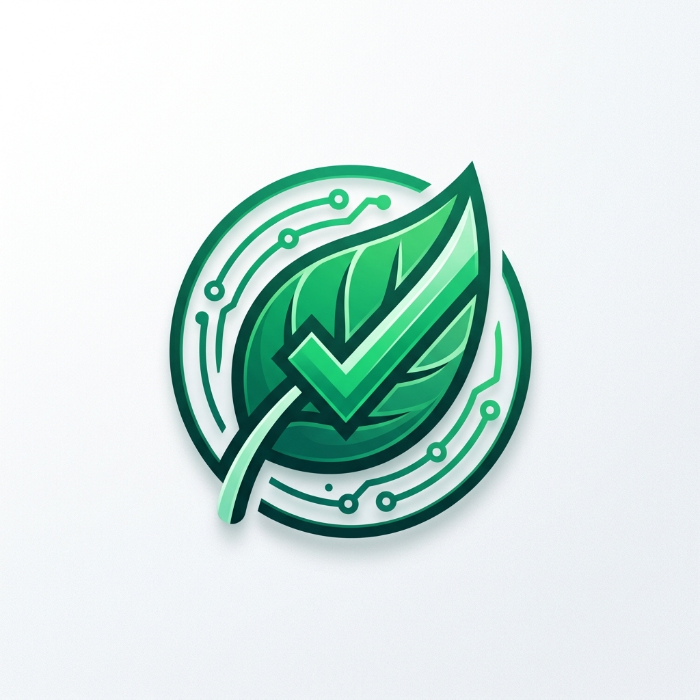
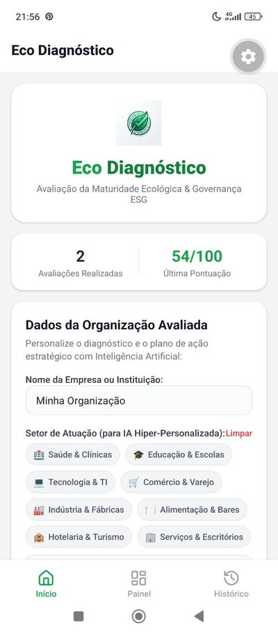
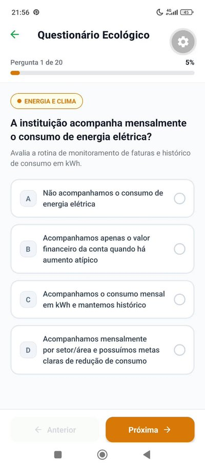
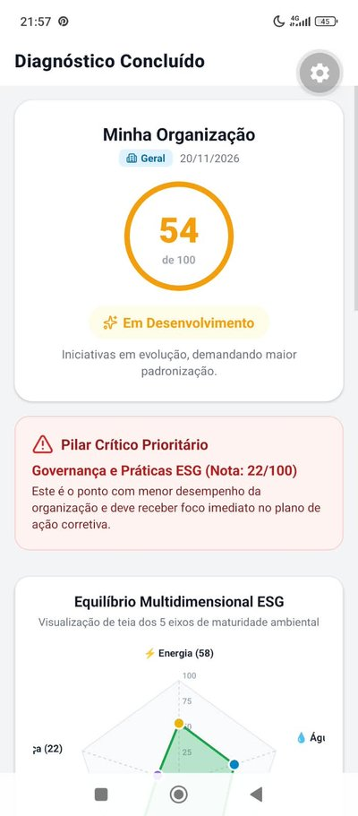
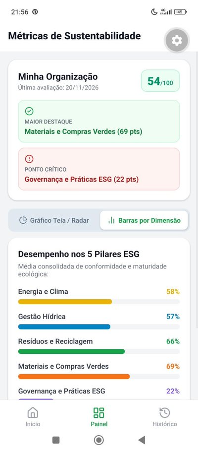
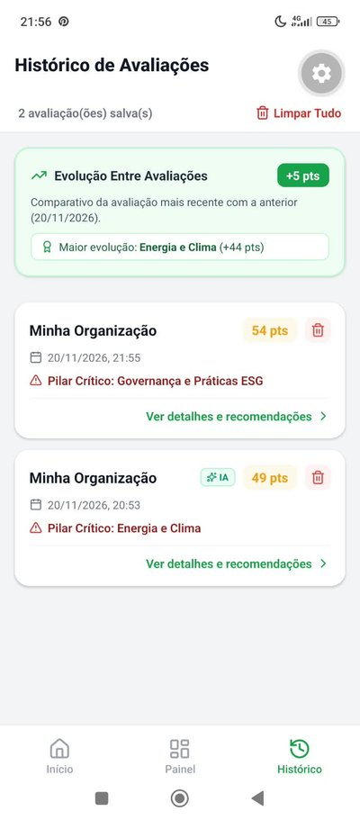

Marina, coordenadora administrativa de uma escola privada.
Precisa mostrar à diretoria onde a escola está e o que fazer primeiro. Responde durante a ronda pelas áreas, quer resultado em minutos e poder mandar o relatório por WhatsApp.
Público-alvo: gestores de PMEs, escolas, clínicas e comércios.
A versão web do projeto existe (branch master, Next.js). O app foi escrito do zero em React Native: não é um web wrapper.
Informe a organização e o setor (saúde, educação, tecnologia, varejo…).
Responda 20 perguntas, 4 por pilar: energia, água, resíduos, materiais e governança.
Veja a nota de 0 a 100, o nível de maturidade, o radar e o pilar crítico.
Gere o plano de ação com IA (Gemini) e exporte o PDF de 1 página.





| Nome | RGM | GitHub | Commits no repositório |
|---|---|---|---|
| Eduardo Braga do Prado | 45157006 | EduBraga7 | App mobile |
| Vitor Mariotto | 43325416 | M4riotto | Versão web original |
| Eric Felix | 48279501 | EricFelixSilva | — |
| Marcos | 46032207 | não informado | — |
| Paulo Henrique Bispo Alves | 04599421-8 | pauloalves0 | — |
| Raquel Medeiros Cavalcanti | 41808142 | RaquelMedeirosCavalcanti | — |
| Tiago de Souza Santana | 41947185 | TiagoSantana21 | — |
Commits conferidos no histórico público de github.com/eco-diagnostic/eco-diagnostic em 20/11/2026. Branch mobile: app. Branch master: versão web.
| Atividade | Eduardo | Vitor | Demais 5 |
|---|---|---|---|
| UI/UX e identidade visual | R/A | — | — |
| Navegação e telas (Expo Router) | R/A | — | — |
| Estado, hooks e dados locais | R/A | — | — |
| Integração com IA e relatório PDF | R/A | — | — |
| Testes no Expo Go e documentação | R/A | — | — |
| Versão web original (base do domínio) | C | R/A | — |
R = responsável · A = responde pelo resultado · C = consultado (tema e regras vieram da versão web)
Reaproveitamento do tema e das regras da versão web.
Início de outubro: app em Expo com armazenamento offline.
Meados de outubro: UX nativa, IA, PDF, rascunhos e radar.
Novembro: Expo Router, SDK 58 e testes em celular físico.
O desenvolvimento mobile foi conduzido por um integrante, a partir da versão web desenvolvida por outro.
ScrollView).--tunnel ngrok, sem conta, e entrada anônima no Expo Go.npm ls) e tipos do pacote.Pressable, usePreventRemove no lugar de beforeRemove e rota /result?id= carregando do AsyncStorage.AbortController) e estados de carregando, erro e sucesso com mensagens claras.id, e setor e organização gravados no rascunho.expo-print.Uso de IA: assistente de código como copiloto na depuração e refatoração. O app foi testado no Expo Go, em celular físico.
android_ripple; no Expo Router, um Pressable simples.usePreventRemove.useSafeAreaInsets na altura das abas e no espaçamento das telas.Pontos fortes
Limitações observadas
Pontos fortes
Limitações observadas
O GreenCo ainda não tem avaliações públicas suficientes na App Store; as limitações vêm da leitura das descrições, não de críticas de usuários. Fontes (acesso em 20/11/2026): App Store (GreenCo ESG Advisory) e abes.org.br.
| Eco Diagnóstico | GreenCo | ABES | |
|---|---|---|---|
| Formato | App móvel | App iOS e Android | Web |
| Custo | Gratuito | Gratuito | Gratuito |
| Foco | Nota + plano de ação | Aprendizado e consultoria | Análise de maturidade |
| Dados | No aparelho; IA só se pedida | Pede contato | Não verificado |
Proposta única: em minutos, nota por pilar, pilar crítico e plano de ação por setor com IA.
Relatório PDF de 1 página para compartilhar, sem cadastro.
mobile)